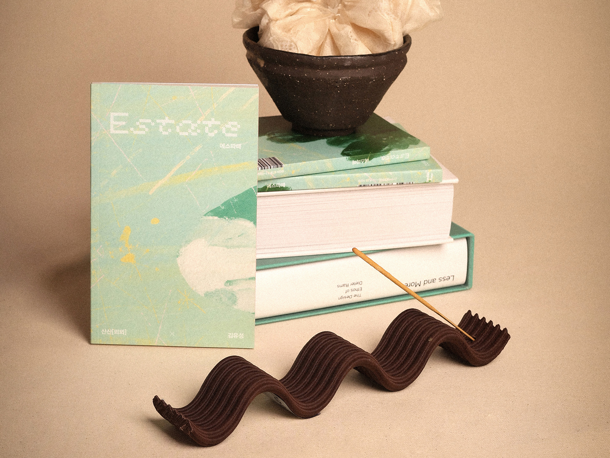
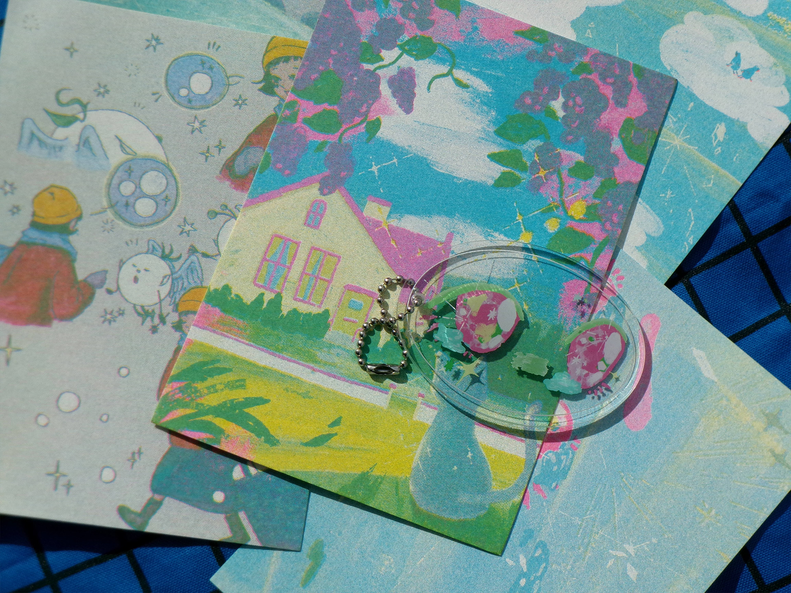
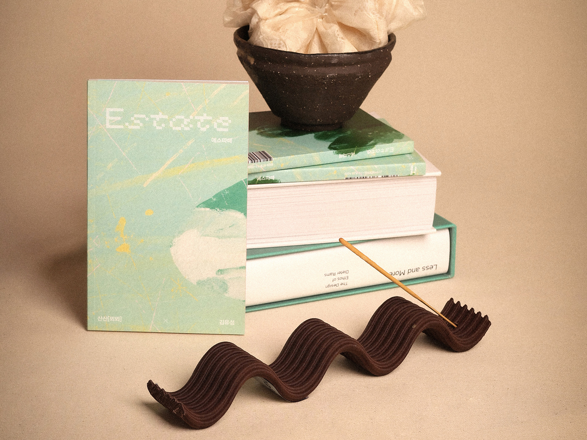
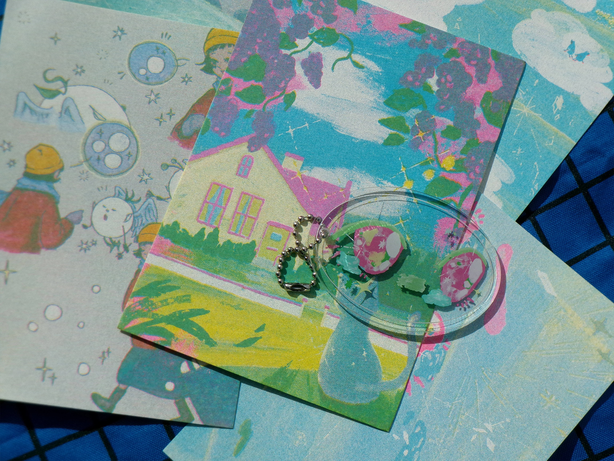

-

 

prev next Publication
Digital Printed[120*190mm]
2025
Book Design / Illustration / PublicationEstate(2025) is a collection of six original fairy tales created through a collaborative project between writer Yoosung Kim based in Italy, and designer SanSan based in London.
This heartfelft collection of stories is crafted for adults who need quiet comfort and gentle warmth.
Written by Yoosung Kim
Illustrations & Design by SanSan(Ye Jin Choi)
Published by SanSan Press
『Estate 에스따데』(2025)는 이탈리아를 중심으로 활동하는 작가 김유성과 런던을 기반으로 활동하는 디자이너 산산[뫼뫼](Ye Jin Choi)의 협업 프로젝트로, 창작 동화 6편을 엮은 감성 동화집입니다. 고요하고 따뜻한 위로가 필요한 어른들을 위한 프로젝트입니다. Footnotes
1 Posters of page 7 to 9 are b-cut images